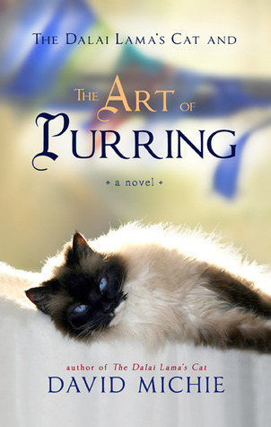

Book by David Michie
The Dalai Lama’s cat is back! David Michie first introduced the fictional feline, HHC (His Holiness’ Cat), dubbed “Little Snow Lion” by the Dalai Lama himself, in his 2012 novel The Dalai Lama’s Cat. HHC was rescued by the Dalai Lama when he saw the small kitten being thrown in the gutter. In the first book, the reader gets an insider’s look at the day to day life of the Dalai Lama’s world as seen by his cat.
In The Dalai Lama’s Cat and the Art of Purring, the Dalai Lama gives his feline companion the task of discovering the true case of happiness.
From the publisher:Little does she know what adventures this task will bring! A hair-raising chase through the streets of McLeod Ganj leads to an unexpected revelation about the perils of self-obsession. An encounter with the mystical Yogi Tarchen inspires a breakthrough discovery about her past—one with dramatic implications for us all. And overheard conversations between ivy-league psychologists, high-ranking lamas, and famous writers who congregate at the Himalaya Book Café help her explore the convergence between science and Buddhism on the vital subject of happiness.
Narrated with warmth, wit and wisdom, this book captured my heart and my mind. Like the first book, this is a wonderful introduction to Buddhist principles in an easily accessible way. Readers who are already familiar with Buddhist teachings will find themselves smiling at how the tenets are presented from a cat’s point of view. The narration is sweet, poignant and at times, funny. The lessons presented in the book are profound, but the manner in which they are conveyed is subtle and entertaining, which, I believe, actually integrates them on a deeper level than merely reading about them would suggest.
The only thing I missed in this book is a stronger presence of the Dalai Lama. In the first book, David Michie’s portrayal of the Dalai Lama adds a dimension of ordinary “humanity” to this global icon. Through Mousie-Tung’s eyes, the reader gets to see this kind, compassionate and brilliant man go about his every day business. In the second book, the focus is more on some of the many colorful residents of McLeod Ganj, whose stories and transformations as they travel the path to happiness are fascinating in their own right. And perhaps there is a lesson in the Dalai Lama’s reduced appearance in this book: happiness doesn’t just come from being in the presence of enlightened leaders, we have to find it within ourselves.
I’ll leave you with one of my favorite passages from the book. It’s so beautifully written, it brought tears to my eyes:
And then there was another all-important teaching his Holiness imparted: “It is not necessary to end the suffering of all beings in order to end your own suffering, or for all beings to be happy in order for you to be happy. If that were the case,” he said with a chuckle, “then all Buddhas would have failed! We can all learn to use this marvelous paradox,”he told me, looking deep into my sapphire blue eyes. “Be wisely selfish, little Snow Lion.”He was silent for a moment, stroking my face with exquisite tenderness. “You do this already, I think, each time you purr.”
Source Review: The Dalai Lama’s Cat and the Art of Purring by David Michie